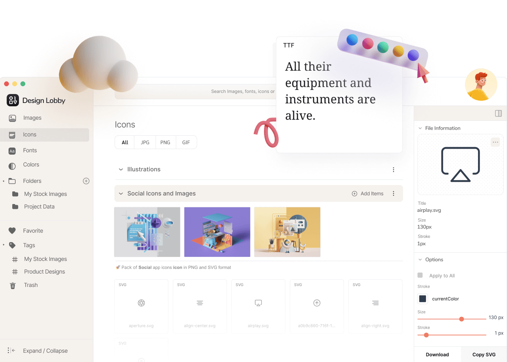
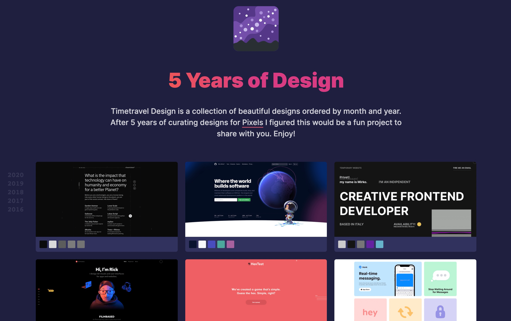
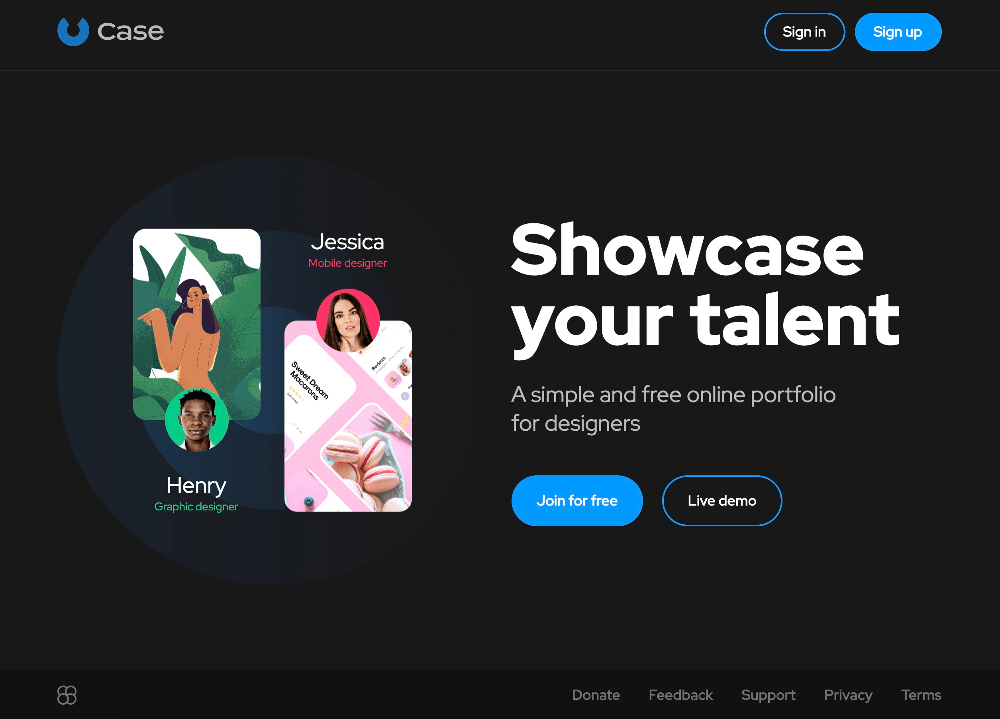
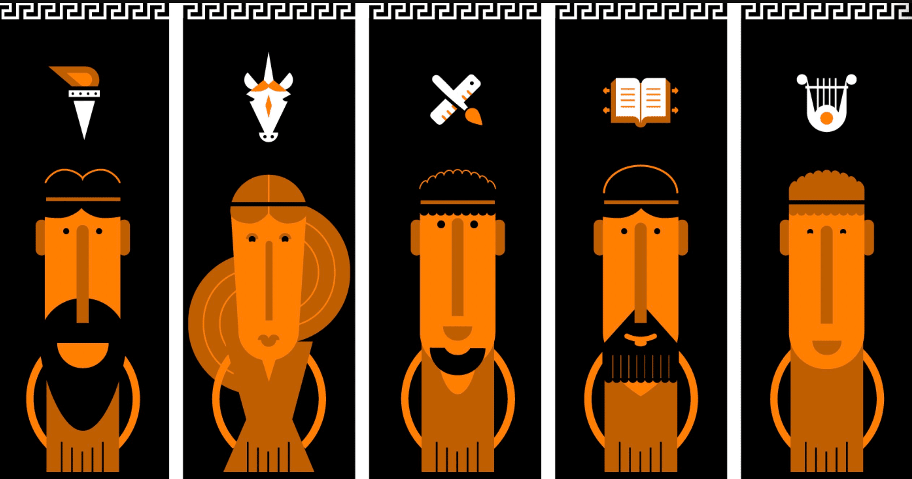
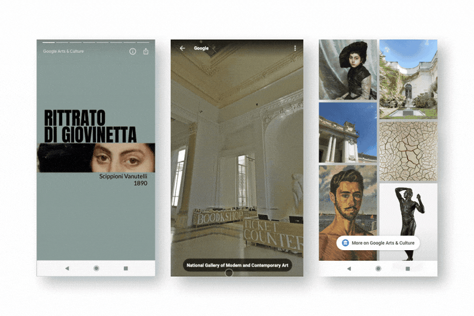
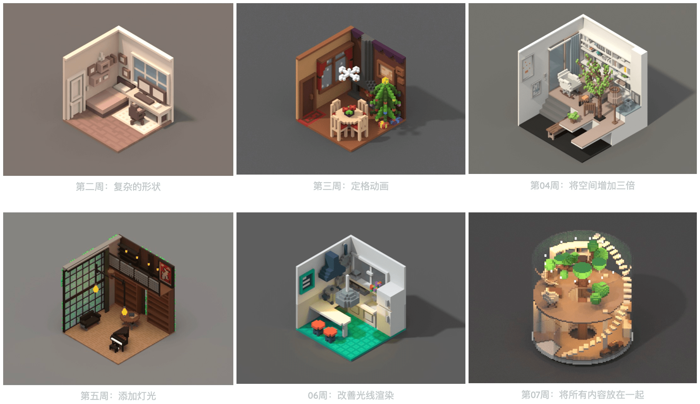
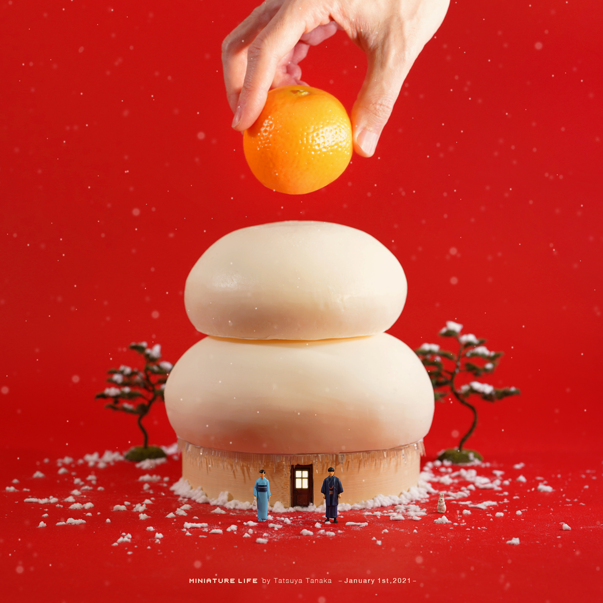

设计周刊 Design Weekly #42
📕 设计资源
Design Lobby
https://designrevision.com/downloads/shards
Design Lobby 帮助你管理设计资源和版本控制，为提升设计团队和自由职业者的效率而建。

5 Years of Design
https://timetravel.pixelfika.com/
Timetravel Design 是一个按年月排序的优秀设计网站的合集

Case-简单免费的设计师专属线上简历
一款简单免费的线上简历，

📗 设计文章
每个设计团队都必须具备的5个设计师角色
https://uxdesign.cc/5-design-personas-every-design-team-has-to-have-1600054e7ea3
文章通过对设计团队中不同角色喜好和特点论述了作为社会动物的设计人员同样需要必备的 5 个角色，大家互补协作，共同完成目标。
“您需要确定不通过的设计师角色，每个角色之间在同一目标下进行互补，对于任何团队来说都是至关重要的。人类是社会动物”——Chiron。

汉堡王的品牌更新
https://www.topys.cn/article/31359
在经过20多年的使用之后，汉堡王似乎准备好了以一个更新的形象进入市场。
它于1月6日宣布将进行全面品牌视觉系统的重塑——重要动作包括恢复经典标志和强调明星产品“皇堡”的体现，以一种对数字呈现更友好的形象示人。通过启用新的logo、品牌字体、门店设计与员工制服，汉堡王似乎穿上了“皇帝的新衣”，显得更加直白。除了标志本身的变化，字体也是此次品牌视觉系统升级的重点，新的品牌字体因为衬线突出而显得“美味”而“粘稠”，将汁多味美的形象钉在消费者的心中。


14 周学会 3D 建模
https://samanthaz.me/writing/learning-3d-modeling-in-14-weeks
本文是设计师 Samantha Zhang 记录自己从零开始学习 3D 建模的一个过程和方法：定期进行有规律的练习，抓住每次机会，创造自己的资源库。

📙 设计案例
Google Design’s Best of 2020
https://design.google/library/google-design-2020
2020年谷歌设计项目的回顾，包含了线上旅游、袖珍画廊、线上教育、智能家居、人工智能等等各个用途的项目。一起了解下吧。

Analyzing the new tesla UI “2020 48 26”
https://uxplanet.org/analyzing-the-new-tesla-ui-2020-48-26-8dccd52dd594
特斯拉作为圣诞礼物推出的新用户界面让用户难以接受，看了下文中的新旧版本对比，改动还挺大的，对于用户已经熟悉的界面，这样真的挺难接受的。看看文中对新 UI 的分析，到底有哪些地方迭代带来的影响。

📙 设计灵感
设计师们联合起来，把去年那只磨人的小耗子弄走！
https://www.topys.cn/article/31360
作为一年一度的传统，一些我们熟悉且喜爱的日本艺术家和设计师为牛年创作属于全新生肖的艺术品，来迎接新的一年。
